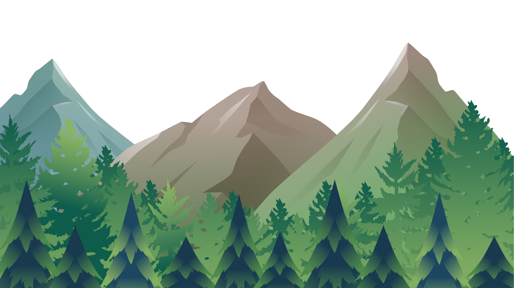
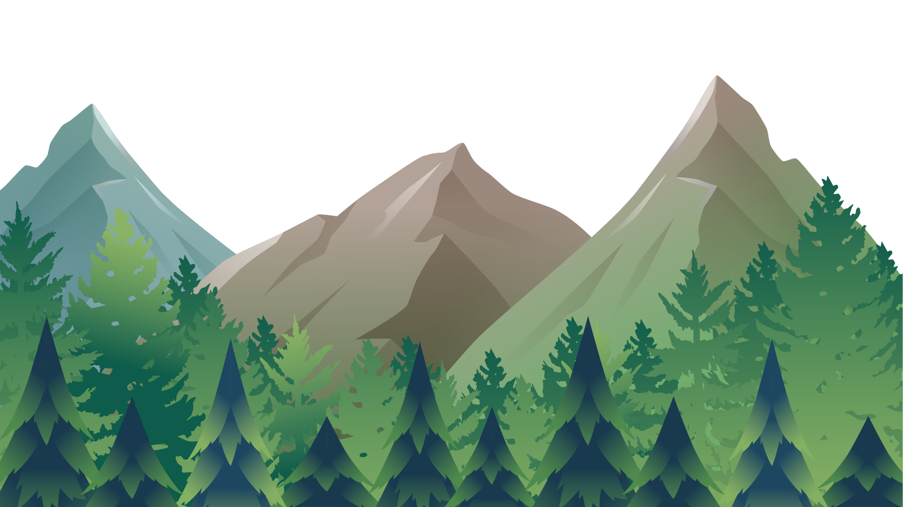
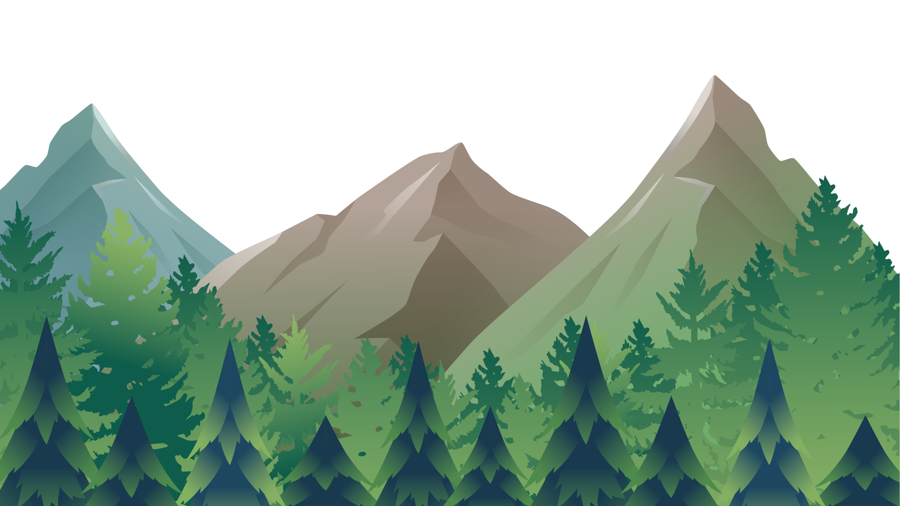
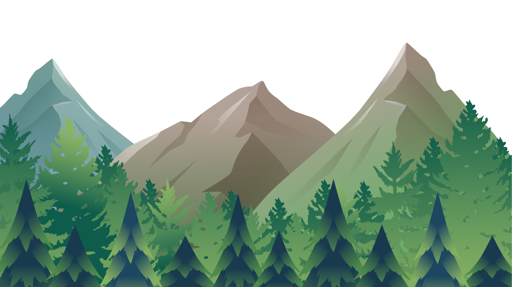

Cliquez-ici
 

Je suis ravi de vous présenter mes projets récents, réalisés en utilisant HTML5 et CSS3 .
En tant que développeur web passionné, je suis constamment en train d'explorer de nouvelles technologies et
d'affiner mes compétences pour créer des expériences web engageantes et innovantes.
Avec ce portfolio, je vous donne un aperçu de mon travail et de ma vision créative.
Chacun des projets présentés ici a été créé avec soin pour offrir une expérience utilisateur agréable et
intuitive.
Vous pourrez voir comment j'ai utilisé les dernières techniques de développement web pour créer des sites
web modernes, dynamiques et esthétiquement
plaisants.
De plus, je suis convaincu que l'interaction et la collaboration avec mes amis-es sont essentielles pour
atteindre les résultats souhaités. C'est pourquoi je suis toujours à leur écoute pour m'assurer
que leurs attentes soit satisfaites.
Je vous invite donc à parcourir mes projets pour découvrir mon style de design, ma capacité à résoudre les
problèmes à répondre aux besoins des clients. N'hésitez pas à me contacter si vous avez des questions ou
des commentaires. Je serai ravi de discuter avec vous de vos projets et de vous aider à les concrétiser.
Merci de votre visite et j'espère que vous apprécierez mon travail !